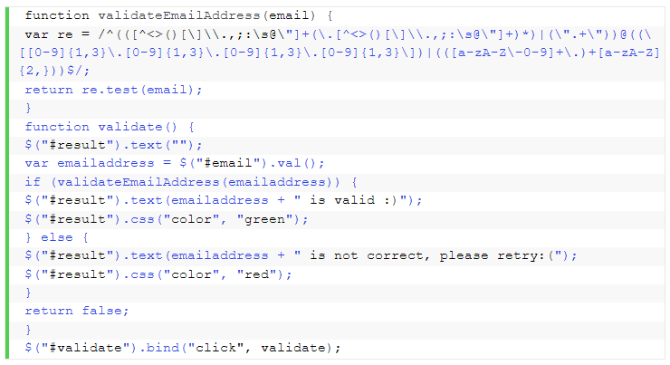

Destacados

Instalar Microsoft Windows Server 2019 paso a pasoEn el artículo de hoy os mostraré rápidamente cómo instalar Windows Server 2019. La verdad que el proceso no tiene ningún misterio.Vamos al lío pero primero de todo dejo un enlace con todas las novedades de Windows Server 2019. |
|
|---|---|
|

|
Recomendadas


Mas Noticias

| Realizado por: | Siguenos en las redes sociales: |
| Begoña Calvo, Daniel Artigues y Carlos Agueda |


|